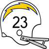
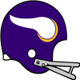
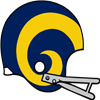

AFL Pro Bowl announced!The AFL Conference has announced their Pro Bowl squad for 1962.
QB John Hadl - Chargers (287/426, 3329 yds, 31 TD)
QB Frank Tripucka - Broncos (340/461, 3153 yds, 30 TD)
RB Curley Johnson - Oilers (238 att, 1079 yds, 5 TD, 18 rec, 122 yds, 0 TD)
RB Dick Christy - Titans (231 att, 865 yds, 8 TD, 23 rec, 137 yds, 0 TD)
RB Donnie Stone - Broncos (238 att, 1036 yds, 12 TD, 20 rec, 127 yds, 0 TD)
FB Keith Lincoln - Chargers (76 att, 329 yds, 6 TD, 25 rec, 170 yds, 0 TD)
G Bob Talamini - Oilers (57 Pancakes)
G Billy Shaw - Bills (65 Pancakes)
T Jerry DeLucca - Bills (104 Pancakes)
T Jim Tyrer - Texans (73 Pancakes)
C Mike Hudock - Titans (52 Pancakes)
C Al Bemiller - Bills (70 Pancakes)
TE Billy Cannon - Oilers (49 rec, 595 yds, 9 TD)
TE Gene Prebola - Broncos (65 rec, 545 yds, 3 TD)
WR Charley Frazier - Oilers (90 rec, 1172 yds, 4 TD)
WR Don Maynard - Titans (90 rec, 1553 yds, 22 TD)
WR Elbert Dubenion - Bills (64 rec, 1181 yds, 8 TD)
WR Lance Alworth - Chargers (73 rec, 1225 yds, 15 TD)
WR Frank Jackson - Texans (91 rec, 1026 yds, 9 TD)
CB Jim Norton - Oilers (79 Tck, 4 Sck, 2 FF, 1 FR)
CB Bobby Bethune - Chargers (81 Tck, 2 Int, 3 FF, 3 FR)
CB Goose Gonsoulin - Broncos (66 Tck, 1 Sck, 3 Int, 1 Def TD, 1 FF)
LB Mike Stratton - Bills (115 Tck, 7 Sck, 1 Int, 9 FF, 4 FR)
LB Frank Buncom - Chargers (78 Tck, 12 Sck, 3 FF)
LB Sherrill Headrick - Texans (122 Tck, 7 Sck, 2 Int, 7 FF, 4 FR)
LB E.J. Holub - Texans (80 Tck, 11 Sck, 3 FF, 1 FR)
DT Tom Sestak - Bills (26 Tck, 4 Sck, 1 FF, 2 FR)
DT Ernie Ladd - Chargers (21 Tck, 5 Sck)
DE Ron McDole - Oilers (44 Tck, 10 Sck, 3 FF, 1 FR)
DE Jerry Mays - Texans (39 Tck, 13 Sck, 1 Def TD, 1 FF, 2 FR)
FS Lee Riley - Titans (62 Tck, 5 Int)
FS Fred Bruney - Patriots (80 Tck, 4 Int, 3 FF, 2 FR)
SS Bobby Hunt - Texans (54 Tck, 2 Sck, 1 Int, 2 FF, 2 FR)
SS John McGeever - Broncos (76 Tck, 1 Int, 1 FF)
K Kenneth Hudgins - Broncos (21/27 FG)
P Brian Holliday - Chargers (3096 yards, 26 inside 20)NFL Pro Bowl announced!The NFL Conference has announced their Pro Bowl squad for 1962.
QB Sonny Jurgensen - Eagles (202/348, 3549 yds, 28 TD)
QB Frank Ryan - Browns (364/553, 3517 yds, 35 TD)
RB Timmy Brown - Eagles (223 att, 977 yds, 7 TD, 14 rec, 183 yds, 1 TD)
RB John David Crow - Cardinals (269 att, 1359 yds, 11 TD, 31 rec, 202 yds, 2 TD)
RB Don Bishop - Cowboys (265 att, 1147 yds, 8 TD, 26 rec, 231 yds, 1 TD)
FB Jim Brown - Browns (72 att, 319 yds, 12 TD, 35 rec, 191 yds, 4 TD)
G Gene Hickerson - Browns (71 Pancakes)
G Jerry Kramer - Packers (63 Pancakes)
T Mike McCormack - Browns (67 Pancakes)
T Ernie McMillan - Cardinals (82 Pancakes)
C Jim Schrader - Eagles (74 Pancakes)
C Art Hunter - Rams (54 Pancakes)
TE Red Mack - Steelers (65 rec, 727 yds, 5 TD)
TE Lee Folkins - Cowboys (62 rec, 657 yds, 6 TD)
WR Tommy McDonald - Eagles (51 rec, 1332 yds, 12 TD)
WR Leon Clarke - Browns (78 rec, 922 yds, 10 TD)
WR Gary Collins - Browns (126 rec, 1342 yds, 17 TD)
WR Raymond Berry - Colts (70 rec, 1087 yds, 6 TD)
WR Carroll Dale - Rams (72 rec, 962 yds, 7 TD)
CB Jimmy Patton - Giants (95 Tck, 3 Int, 1 Def TD, 2 FF, 1 FR)
CB Bobby Boyd - Colts (73 Tck, 6 Int, 3 FF, 2 FR)
CB Richie Petitbon - Bears (84 Tck, 3 Int, 1 Def TD, 3 FF, 2 FR)
LB Maxie Baughan - Eagles (96 Tck, 14 Sck, 3 FF, 1 FR)
LB Chuck Bednarik - Eagles (122 Tck, 15 Sck, 3 FF, 1 FR)
LB Jim Houston - Browns (113 Tck, 9 Sck, 1 Int, 1 FF)
LB Jack Pardee - Rams (98 Tck, 8 Sck, 1 Sfty, 3 FF)
DT Floyd Peters - Browns (29 Tck, 7 Sck, 2 FF, 1 FR)
DT Merlin Olsen - Rams (36 Tck, 9 Sck)
DE George Andrie - Cowboys (30 Tck, 10 Sck, 2 FF)
DE Deacon Jones - Rams (47 Tck, 15 Sck, 3 FF, 1 FR)
FS Jimmy Johnson - 49ers (86 Tck, 2 Sck, 5 Int, 3 Def TD, 3 FF)
FS J.C. Caroline - Bears (61 Tck, 2 Int, 1 Def TD, 3 FF)
SS Dick LeBeau - Lions (70 Tck, 4 Sck, 1 Int, 4 FF, 3 FR)
SS Lindon Crow - Rams (71 Tck, 2 Sck, 2 Int, 3 FF, 4 FR)
K Danny Villanueva - Rams (35/39 FG)
P Bobby Joe Green - Bears (2363 yards, 27 inside 20)QB Frank Ryan (Cle) wins Playoff MVP! NEW YORK -- The Cleveland Browns' QB took home the 1962 Playoff MVP award today. Ryan won the award by amassing playoff totals of 54/86, 548 yds, 6 TD. NEW YORK -- The Cleveland Browns' QB took home the 1962 Playoff MVP award today. Ryan won the award by amassing playoff totals of 54/86, 548 yds, 6 TD.
QB Frank Ryan (Cle) wins League MVP!NEW YORK -- The Cleveland Browns' QB was a landslide winner Friday in balloting by a nationwide panel of 50 sports writers and broadcasters who cover the league. Ryan won the MVP award by amassing season totals of 364/553, 3517 yds, 35 TD.
"I really accept this award on behalf of the team and the organization because there is no way I would have accomplished this much without everyone creating a winning environment," Ryan said after receiving the award.LB Chuck Bednarik (Phi) wins Defensive Player of the Year! NEW YORK -- In his own view, Chuck Bednarik put together his best professional season in 1962. How appropriate, then, that he is the Wolverine Studios Sports Newtwork 1962 Defensive Player of the Year. NEW YORK -- In his own view, Chuck Bednarik put together his best professional season in 1962. How appropriate, then, that he is the Wolverine Studios Sports Newtwork 1962 Defensive Player of the Year.
The versatile Bednarik had 122 tackles, 15 sacks, 0 interceptions, and 3 forced fumbles with 0 defensive touchdowns, and was a key to the Eagles' turnaround on defense. His role on the defense earned Bednarik a majority of votes Tuesday from a nationwide panel of 50 sports writers and broadcasters who cover the league.
LB Mike Stratton (Buf) wins Defensive Rookie of the Year! NEW YORK -- The Buffalo Bills' LB was a landslide winner Friday in balloting by a nationwide panel of 50 sports writers and broadcasters who cover the league. Stratton won the Rookie of the Year award by amassing season totals of 115 Tck, 7 Sck, 1 Int, 9 FF, 4 FR. NEW YORK -- The Buffalo Bills' LB was a landslide winner Friday in balloting by a nationwide panel of 50 sports writers and broadcasters who cover the league. Stratton won the Rookie of the Year award by amassing season totals of 115 Tck, 7 Sck, 1 Int, 9 FF, 4 FR.
QB Frank Ryan (Cle) wins Offensive Player of the Year!Cleveland Browns quarterback Frank Ryan is Wolverine Studios Sports Network's Offensive Player of the Year, as selected by a panel of players, coaches and executives.
Ryan received 299 first-place votes from the 583 people polled.
Ryan in 1962 had 3517 yards and 35 TDs, with only 10 interceptions for a QB Rating of 97.0.QB John Hadl (SD) wins Offensive Rookie of the Year!NEW YORK -- The San Diego Chargers' QB was a landslide winner Friday in balloting by a nationwide panel of 50 sports writers and broadcasters who cover the league. Hadl won the Rookie of the Year award by amassing season totals of 287/426, 3329 yds, 31 TD.1962 Super BowlThe Cleveland Browns have defeated the Denver Broncos in the 1962 Super Bowl.
The final score was Browns 42 - Broncos 7.
Frank Ryan - QB had a dominant game on offense playing a key part in the victory.
On defense Mike Lucci - LB had a stellar outing helping seal the win.NFL Championship GameThe Cleveland Browns have defeated the Chicago Bears in the 1962 NFL Championship Game.
The final score was Browns 48 - Bears 17.
Frank Ryan - QB had a dominant game on offense playing a key part in the victory.
On defense Jim Houston - LB had a stellar outing helping seal the win.AFL Championship Game The Denver Broncos have defeated the Houston Oilers in the 1962 AFL Championship Game. The Denver Broncos have defeated the Houston Oilers in the 1962 AFL Championship Game.
The final score was Broncos 43 - Oilers 14.
Charley Frazier - WR had a dominant game on offense even while his team lost.
On defense Andre Payne - CB had a stellar outing helping seal the win.
Week 16: CB Bobby Boyd (Bal) wins Defensive Player of the Week CB Boyd's ball hawking ability was on display in the Colts 20-0 game with the Detroit Lions. He finished with 9 Tck, 3 Int, 1 FF, 1 FR. CB Boyd's ball hawking ability was on display in the Colts 20-0 game with the Detroit Lions. He finished with 9 Tck, 3 Int, 1 FF, 1 FR.
"Bobby has the unique ability to make plays and generate turnovers." -Colts Defensive Coordinator
Week 16: RB Dick Christy (NYT) wins Offensive Player of the Week The honor comes after Christy's 24 att, 170 yds, 4 TD performance against the Oakland Raiders. Christy from North Carolina State was selected in round 0, 4 years ago. The honor comes after Christy's 24 att, 170 yds, 4 TD performance against the Oakland Raiders. Christy from North Carolina State was selected in round 0, 4 years ago.
Christy now has 865 Rushing Yards and 8 Touchdowns for the season.
Game Recaps for Week 16Steelers - 24, Cowboys - 7
Browns - 25, Giants - 21
Redskins - 42, Cardinals - 21
Colts - 20, Lions - 0
Bears - 28, 49ers - 21
Vikings - 24, Rams - 24
Packers - 35, Eagles - 14
Broncos - 20, Bills - 10
Titans - 41, Raiders - 7
Texans - 10, Patriots - 6
Oilers - 37, Chargers - 7Houston Oilers resigns Edmundo Martel as Head CoachThe Oilers have announced that they have given Edmundo Martel a new contract. Martel will continue to serve as Head Coach for 7 years earning 8 million pr year.Game of the Week: New York Giants at Cleveland BrownsOur Expert Predictions:
Jeremy Piper : Cleveland Browns
The leadership on the Browns is great. You look at guys like Gene Hickerson - G and what he does for a team. Leadership like that helps you win games.
Mary Moore : New York Giants
They field one of the most underestimated offenses. They will rack up a lot of points.
Jim Nox : New York Giants
Last game was a fluke. They will win again this week.
Darren Francis : Cleveland Browns
I do not think you get very far against their defense. They are 1st in sacks with 57. They are 3rd in points allowed, averaging only 14.2. They are 5th in pass defense. They only give up 214.8 per game. They are 1st in interceptions with 18. They are 1st in the league pass average yards per rush. This game will be so very entertaining.
San Francisco 49ers upset the Los Angeles Rams! The San Francisco 49ers fans are celebrating after the 49ers took down the Los Angeles Rams. The San Francisco 49ers fans are celebrating after the 49ers took down the Los Angeles Rams.
In a superb effort the 49ers kept at it, and brought home the win. The Rams are widely considered to be the better of the two programs, but with the 49ers winning the fans are hoping that the 49ers will soon be able to dance with the big boys.
Week 15: LB Mike Stratton (Buf) wins Defensive Player of the WeekLB Mike Stratton of the Buffalo Bills has earned the Defensive Player of the Week award. Stratton finished with 9 Tck, 1 Sck, 1 Int, 1 FF, 1 FR.Week 15: QB Frank Ryan (Cle) wins Offensive Player of the WeekThe league announced Cleveland Browns quarterback Frank Ryan has been named Offensive Player of the Week.
The Browns defeated the New York Giants, 42 to 16. Ryan did his part, throwing 6 touchdowns, completing 37 of 52 passes for 403 yards. His outstanding performance now brings his season Touchdown to Interception Ratio to 32 to 9, and a passer rating of 96.3.Game Recaps for Week 15Browns - 42, Giants - 16
Cowboys - 19, Cardinals - 14
Eagles - 24, Redskins - 6
Bears - 45, Packers - 17
Vikings - 17, Lions - 16
49ers - 22, Rams - 14
Titans - 49, Raiders - 13
Bills - 44, Chargers - 34
Oilers - 34, Patriots - 3Dallas Texans resigns Lawrence Dejesus as Head Coach The Texans have announced that they have given Lawrence Dejesus a new contract. Dejesus will continue to serve as Head Coach for 6 years earning 3 million pr year. The Texans have announced that they have given Lawrence Dejesus a new contract. Dejesus will continue to serve as Head Coach for 6 years earning 3 million pr year.
Game of the Week: Cleveland Browns at New York GiantsOur Expert Predictions:
Jeremy Piper : Cleveland Browns
The leadership on this team is great. Having a guy like Gene Hickerson - G on the field and in the locker room is exactly what you need to win games like this.
Mary Moore : New York Giants
I may be biased here, but I think the Giants are obviously the better team.
Jim Nox : New York Giants
Boy, oh boy am I looking forward to this.
Darren Francis : Cleveland Browns
For this game, the film shows that Bob Gain - DT is the guy to watch. His paycheck alone should give that away. He will be great to watch. But it will be a close game.
No Pass Zone in Detroit. Lions pass defense this year has been terrific this season, giving up only 1955 in 12 games. Said one offensive coach, 'They force you to really think up new things.. Lions pass defense this year has been terrific this season, giving up only 1955 in 12 games. Said one offensive coach, 'They force you to really think up new things..
Donnie Stone - RB is looking good!Donnie Stone - RB is looking like the real deal out there so far this season. If he keeps playing such outstanding football, he’s got a shot at becoming on of the greatsCriticism of C Mike Hudock after Titans-Bills game!Larry Grantham blasted the effort of some teammates after the loss. 'These guys have to show up' he said. 'We all have to take responsibility and make sure we are prepared and some guys are letting the team down'. 'We lost and somebody is to blame. If you look at the game, you will see some players just are not delivering.' said the Titans LB. Asked to clarify, Grantham suggested Mike Hudock - C needs to perform better, but underscored that there was plenty of blame to go around. 'Guys need to listen, we need to get grinding, you cannot just show up and expect to play or expect to win', Grantham concluded.Week 14: LB Mike Stratton (Buf) wins Defensive Player of the WeekLB Mike Stratton of the Buffalo Bills has earned the Defensive Player of the Week award. Stratton finished with 9 Tck, 1 Sck, 2 FF.Week 14: QB Sonny Jurgensen (Phi) wins Offensive Player of the WeekThe league announced Philadelphia Eagles quarterback Sonny Jurgensen has been named Offensive Player of the Week.
The Eagles defeated the Pittsburgh Steelers, 33 to 21. Jurgensen did his part, throwing 4 touchdowns, completing 25 of 32 passes for 385 yards. His outstanding performance now brings his season Touchdown to Interception Ratio to 25 to 2, and a passer rating of 116.5.Coach Showdown with Simon Sly (Season 1962 Week 15)Welcome to Coach Showdown with me. I'm Simon Sly. Let us jump right in.
ALEXANDER GIBSON, DEFENSIVE COORDINATOR, OAKLAND RAIDERS
The Raiders currently sit at 2-10.
Alexander Gibson does not like gambling on defense. Advocating a bend, but don't break mindset. His attitude is relaxed, and he is good at making everyone around him feel comfortable and promotes a friendly and unceremonial atmosphere in the organisation.
Alexander Gibson runs a 3-4 Hybrid defense. His system requires top notch cornerbacks. He prefers mixing up coverage. The defensive line's primary role is rushing the passer. He wants fast linebackers, who can help in coverage.
They are 16th in sacks with 24.
They are 22nd in points allowed, averaging 33.5.
They are 22nd in pass defense with 302.8 yards given up per game.
They are 20th in run defense. Giving up 132.4 yards per game.
They are 13th in interceptions with 9.
They are 9th in the league in tackles for loss.
They are 22nd in forced fumbles.
Gibson is slightly better than Good at estimating player potential.
LARRY GOOD, DEFENSIVE COORDINATOR, SAN FRANCISCO 49ERS
The 49ers currently sit at 3-9.
Larry Good favors an aggressive defense. He adapts his demeanor to the situation, and does whatever he thinks it takes to get through to his players and co-workers.
Larry Good runs a 3-3-5 defense. The defense revolves around the linebackers. He prefers mixing up coverage. He wants fast linebackers, who can help in coverage.
They are 13th in sacks with 29.
They are 17th in points allowed, averaging 24.8.
They are 14th in pass defense with 226.2 yards given up per game.
They are 15th in run defense. Giving up 107.1 yards per game.
They are 4th in interceptions with 13.
They are 17th in the league in tackles for loss.
They are 10th in forced fumbles.
Good outperforms Gibson in assessing player ability.
Good outperforms Gibson in player development.
Good prepares better than Gibson.
Game Recaps for Week 14Eagles - 33, Steelers - 21
Browns - 15, Cowboys - 14
Colts - 23, Packers - 21
Bears - 29, Lions - 3
Vikings - 10, 49ers - 7
Giants - 21, Cardinals - 17
Rams - 23, Redskins - 6
Bills - 30, Titans - 27
Texans - 42, Patriots - 10
Oilers - 41, Raiders - 7
Broncos - 23, Chargers - 17Game of the Week: Dallas Cowboys at Cleveland BrownsOur Expert Predictions:
Jeremy Piper : Dallas Cowboys
I do not think you get very far against their offense. They are 5th in the league pass completion percentage. They are 5th in the league average yards per rush. They are 5th in the league points scored per game. They average 25.9! They greatly outscore them here.
Mary Moore : Cleveland Browns
Head coach Michael Soto puts them over the top in this game. He is running an explosive defense. A tough choice. I think it will be a close game.
Jim Nox : Cleveland Browns
Looking at how the teams match up, I think a good bet is that Ray Renfro - RB has to potential to carry the Browns offense. The way they win this game will tell a lot about what they are as a team.
Darren Francis : Cleveland Browns
The leadership on the Browns is great. You look at guys like Gene Hickerson - G and what he does for a team. Leadership like that helps you win games.
Top receiver trio?The Browns trio of Gary Collins - WR, Leon Clarke - WR and Jim Brown - FB are currently the leading trio of receivers in the league, with 21 receving touchdowns between the three.Week 13: QB Frank Ryan (Cle) wins Offensive Player of the WeekThe league announced Cleveland Browns quarterback Frank Ryan has been named Offensive Player of the Week.
The Browns defeated the Philadelphia Eagles, 54 to 7. Ryan did his part, throwing 5 touchdowns, completing 32 of 46 passes for 354 yards. His outstanding performance now brings his season Touchdown to Interception Ratio to 24 to 6, and a passer rating of 94.5.Week 13: LB Jerry Tubbs (Dal) wins Defensive Player of the WeekLB Jerry Tubbs of the Dallas Cowboys has earned the Defensive Player of the Week award. Tubbs finished with 8 Tck, 1 Sck, 3 FF, 2 FR.Game Recaps for Week 13Browns - 54, Eagles - 7
Cowboys - 32, Giants - 0
Packers - 39, 49ers - 29
Rams - 23, Lions - 13
Redskins - 20, Cardinals - 7
Colts - 45, Vikings - 24
Bears - 21, Steelers - 21
Broncos - 38, Bills - 14
Texans - 40, Raiders - 6
Patriots - 17, Chargers - 13
Titans - 27, Oilers - 27Game of the Week: Philadelphia Eagles at Cleveland BrownsOur Expert Predictions:
Jeremy Piper : Philadelphia Eagles
The Eagles are the real deal.
Mary Moore : Cleveland Browns
I think having a leader like Gene Hickerson - G is the kind of thing that will help the Browns win this game. It may even be a blow out.
Jim Nox : Philadelphia Eagles
They field one of the most underestimated defenses. They are 3rd in sacks with 37. This will be a great game to watch.
Darren Francis : Cleveland Browns
In the context of this game, it seems a given that Jim Houston - LB will shine for the Browns defense.
Minnesota Vikings pull off the upset!The Minnesota Vikings fans are celebrating after the Vikings took down the Los Angeles Rams.
In a superb effort the Vikings kept at it, and brought home the win. The Rams are widely considered to be the better of the two programs, but with the Vikings winning the fans are hoping that the Vikings will soon be able to dance with the big boys.Pittsburgh Steelers surprise everyone!The Pittsburgh Steelers fans are celebrating after the Steelers took down the New York Giants.
In a superb effort the Steelers kept at it, and brought home the win. The Giants are widely considered to be the better of the two programs, but with the Steelers winning the fans are hoping that the Steelers will soon be able to dance with the big boys.Coach Showdown with Simon Sly (Season 1962 Week 13)Time for this weeks get to know your coaches. As always, Simon Sly deliver with this weeks coach comparison. We have an odd couple for you this week.
JOHN DAVIS, HEAD COACH, DETROIT LIONS
The Lions currently sit at 1-9.
John Davis preaches flexibility on both offense and defense, focusing on what the situation demands. He is a silent, strong leader. He does his job meticulously without making unnecessary waves, and expects those around him to do the same.
Davis is a better offisive mind than Bratcher.
Davis is so much smarter than Bratcher.
Davis is better suited to lead a team than Bratcher.
Davis motivates his team a little better than Bratcher.
JOHN BRATCHER, HEAD COACH, WASHINGTON REDSKINS
The Redskins currently sit at 2-8.
John Bratcher wants his offense and defense to play smart, conservative football. Let the other team make the mistakes. His attitude is relaxed, and he is good at making everyone around him feel comfortable and promotes a friendly and unceremonial atmosphere in the organisation.
Bratcher is slightly more detail oriented than Davis.
Week 12: DE Joe Robb (StL) wins Defensive Player of the Week DE Joe Robb of the St. Louis Cardinals has earned the Defensive Player of the Week award. Robb finished with 6 Tck, 2 Sck, 1 FF, 1 FR. DE Joe Robb of the St. Louis Cardinals has earned the Defensive Player of the Week award. Robb finished with 6 Tck, 2 Sck, 1 FF, 1 FR.
Week 12: RB Ronnie Bull (Chi) wins Offensive Player of the Week Week 12's Offensive Player of the Week is Running Back Ronnie Bull. His 16 att, 155 yds, 1 TD performance stood out in the 31 to 21 victory for the Chicago Bears. Week 12's Offensive Player of the Week is Running Back Ronnie Bull. His 16 att, 155 yds, 1 TD performance stood out in the 31 to 21 victory for the Chicago Bears.
The former Baylor gridiron star is racking up the rushing yards and now has 601 Yards and 2 Touchdowns for the season.
Game Recaps for Week 12Steelers - 33, Giants - 13
Cowboys - 27, Redskins - 6
Bears - 31, Colts - 21
Vikings - 20, Rams - 16
49ers - 19, Packers - 17
Cardinals - 17, Eagles - 10
Browns - 16, Lions - 6
Chargers - 35, Broncos - 33
Titans - 13, Texans - 9
Bills - 33, Raiders - 16
Patriots - 34, Oilers - 17Game of the Week: San Diego Chargers at Denver BroncosOur Expert Predictions:
Jeremy Piper : San Diego Chargers
There will be some wild plays in this game.
Mary Moore : Denver Broncos
Their offense will step up this game. They are 1st in the league pass completion percentage. They are 3rd in the league passing touchdowns with 21. They are 4th in the league rushing touchdowns with 13. They are 3rd in the league points scored per game. They average 28.9!
Jim Nox : Denver Broncos
They have a dominant defense. They do not get enough credit for that. They are 1st in points allowed, averaging only 10.3. They are 3rd in pass defense. They only give up 201.9 per game. They are 4th in interceptions with 10. There are so many factors to consider when making predictions. This one was easy though.
Darren Francis : San Diego Chargers
This should be obvious to anyone who looks a the teams.
Buffalo Bills surprise everyone!The Buffalo Bills fans are celebrating after the Bills took down the San Diego Chargers.
In a superb effort the Bills kept at it, and brought home the win. The Chargers are widely considered to be the better of the two programs, but with the Bills winning the fans are hoping that the Bills will soon be able to dance with the big boys.Week 11: LB Jim Houston (Cle) wins Defensive Player of the WeekLB Houston absolutely dominated in the Browns 24-14 game with the Washington Redskins. He finished with 7 Tck, 2 Sck.Week 11: RB Phil King (NYG) wins Offensive Player of the Week Week 11's Offensive Player of the Week is Running Back Phil King. His 6 att, 46 yds, 1 TD, 6 rec, 134 yds, 2 TD performance stood out in the 41 to 0 victory for the New York Giants. Week 11's Offensive Player of the Week is Running Back Phil King. His 6 att, 46 yds, 1 TD, 6 rec, 134 yds, 2 TD performance stood out in the 41 to 0 victory for the New York Giants.
The former Vanderbilt gridiron star is racking up the rushing yards and now has 274 Yards and 3 Touchdowns for the season.
Game Recaps for Week 11Browns - 24, Redskins - 14
Eagles - 31, Steelers - 24
Giants - 41, Cowboys - 0
Bears - 23, Packers - 0
49ers - 17, Vikings - 16
Rams - 29, Colts - 24
Bills - 28, Chargers - 23
Texans - 20, Titans - 18
Broncos - 41, Patriots - 10
Oilers - 34, Raiders - 10Game of the Week: Dallas Cowboys at New York GiantsOur Expert Predictions:
Jeremy Piper : New York Giants
They will rely on their defense to pull them through. They are 3rd in points allowed, averaging only 14. They are 3rd in run defense. Giving up only 68.4 yards per game. They are 4th in forced fumbles. They get their win and this game will be just another day at the office.
Mary Moore : New York Giants
All aboard the Giants hypetrain. If they lose this one, I will never hear the end of it.
Jim Nox : New York Giants
Boy, oh boy am I looking forward to this.
Darren Francis : New York Giants
And you can take that with you to the bank.
Coach Showdown with Simon Sly (Season 1962 Week 11)You know what time it is. It is time for your weekly coach comparison with Simon Sly. This week features to interesting specimens.
LARRY GOOD, DEFENSIVE COORDINATOR, SAN FRANCISCO 49ERS
The 49ers currently sit at 1-7.
Larry Good favors an aggressive defense. He adapts his demeanor to the situation, and does whatever he thinks it takes to get through to his players and co-workers.
Larry Good runs a 3-3-5 defense. The defense revolves around the linebackers. He prefers mixing up coverage. He wants fast linebackers, who can help in coverage.
They are 13th in sacks with 18.
They are 18th in points allowed, averaging 26.9.
They are 12th in pass defense with 228.9 yards given up per game.
They are 12th in run defense. Giving up 103.6 yards per game.
They are 7th in interceptions with 8.
They are 13th in the league in tackles for loss.
They are 7th in forced fumbles.
Good outperforms Sanchez in player development.
Good is better suited to lead a team than Sanchez.
Good prepares for opponents way more than Sanchez.
STEVEN SANCHEZ, DEFENSIVE COORDINATOR, BOSTON PATRIOTS
The Patriots currently sit at 4-4.
Steven Sanchez favors an aggressive defense. He adapts his demeanor to the situation, and does whatever he thinks it takes to get through to his players and co-workers.
Steven Sanchez runs a 3-3-5 Hybrid defense. The defense revolves around the linebackers. It features primarily zone coverage. He wants defensive linemen who can help in runsupport. Sanchez aims to field versatile linebackers.
They are 10th in sacks with 24.
They are 16th in points allowed, averaging 23.8.
They are 7th in pass defense with 213.1 yards given up per game.
They are 6th in run defense. Giving up 85.5 yards per game.
They are 19th in interceptions with 4.
They are 9th in the league in tackles for loss.
They are 15th in forced fumbles.
Sanchez outperforms Good in scouting.
Sanchez is slightly more detail oriented than Good.
Sanchez exhibits way more flexibility than Good.
Week 10: RB Don Bishop (Dal) wins Offensive Player of the WeekThe honor comes after Bishop's 15 att, 157 yds, 2 TD performance against the St. Louis Cardinals. Bishop from Los Angeles Community College was selected in round 0, 4 years ago.
Bishop now has 651 Rushing Yards and 5 Touchdowns for the season.Week 10: DE Jerry Mays (Dal) wins Defensive Player of the WeekDE Mays absolutely dominated in the Texans 44-6 game with the Buffalo Bills. He finished with 3 Tck, 2 Sck, 1 Def TD, 1 FF, 1 FR.Game Recaps for Week 10Giants - 31, Eagles - 16
Redskins - 13, Steelers - 0
Bears - 48, 49ers - 7
Packers - 27, Vikings - 10
Rams - 45, Colts - 7
Cowboys - 73, Cardinals - 7
Browns - 36, Lions - 17
Chargers - 41, Titans - 30
Broncos - 24, Oilers - 0
Texans - 44, Bills - 6
Patriots - 34, Raiders - 21Week 10: WR Ron Kramer (GB) has suffered a major injury! The Green Bay Packers' WR Ron Kramer has suffered an injury: Out (12-16 weeks). The Green Bay Packers' WR Ron Kramer has suffered an injury: Out (12-16 weeks).
Game of the Week: Philadelphia Eagles at New York GiantsOur Expert Predictions:
Jeremy Piper : New York Giants
People tend to underestimate their defense. They are 3rd in points allowed, averaging only 13.7. They are 5th in pass defense. They only give up 204.9 per game. They are 3rd in run defense. Giving up only 71.1 yards per game.
Mary Moore : New York Giants
For this game, my research indicates that Jim Katcavage is the best DE's in this game. He will have a great day and be critical in this game. Just win baby.
Jim Nox : New York Giants
Surely, the Giants win. Do not let anyone tell you otherwise.
Darren Francis : New York Giants
This is a very good offense. They are 3rd in the league pass completion percentage. They are 4th in the league points scored per game. They average 26.4!
Week 9: LB Ray Nitschke (GB) wins Defensive Player of the WeekLB Ray Nitschke of the Green Bay Packers has earned the Defensive Player of the Week award. Nitschke finished with 6 Tck, 2 Sck, 1 Int, 2 FF.Week 9: QB Len Dawson (Dal) wins Offensive Player of the WeekThe league announced Dallas Texans quarterback Len Dawson has been named Offensive Player of the Week.
The Texans defeated the Oakland Raiders, 41 to 7. Dawson did his part, throwing 6 touchdowns, completing 37 of 42 passes for 431 yards. His outstanding performance now brings his season Touchdown to Interception Ratio to 13 to 6, and a passer rating of 99.5.William Ali responds to Larry Grantham.'We aint taking no bait! What does he think we are? Trout?' William Ali responded when asked about the gloating of Larry Grantham after their recent game. 'Our focus is football, not silly childrens games' continued the K. Fans in Houston were quick to reply on behalf of the Oilers with a whirl of posts on social media, and it is fair to say they took the comments by Larry Grantham less gracefully.Game Recaps for Week 9Eagles - 17, Redskins - 3
Giants - 29, Steelers - 7
Browns - 20, Cowboys - 3
Packers - 24, Vikings - 13
Lions - 27, 49ers - 10
Rams - 37, Bears - 27
Colts - 31, Cardinals - 17
Titans - 30, Bills - 24
Texans - 41, Raiders - 7
Chargers - 34, Oilers - 31
Broncos - 21, Patriots - 10San Diego Chargers resigns Kevin Mireles as Head CoachThe Chargers have announced that they have given Kevin Mireles a new contract. Mireles will continue to serve as Head Coach for 6 years earning 3 million pr year.Game of the Week: Pittsburgh Steelers at New York GiantsOur Expert Predictions:
Jeremy Piper : Pittsburgh Steelers
You just have to look at their offense. They are 3rd in the league passing touchdowns with 14. They are 3rd in the league passing yards per game. They average 262.7! They are maulers, 3rd in the league in pancakes. They are 1st in the league average yards per rush. They are 3rd in the league rushing touchdowns with 9. They are 4th in the league rushing yards per game. They average 126.9! They get their win and this game will be just another day at the office.
Mary Moore : New York Giants
When you consider the two rosters, I see that Jimmy Patton - CB will be a key player to watch. He always delivers a highlight reel. I am really on the fence for this one, but I stand my prediction.
Jim Nox : New York Giants
Looking at how the teams match up, a good bet is that Dick Modzelewski - DT is bound to have an impact. The offense will have to gameplan for him if they want to stand even the slightest chance.
Darren Francis : New York Giants
I just have this gut feeling. If they do not win, I have to buy cake for the entire office. That is how sure I am.
Defense dominates in Los Angeles.The Rams defensive front is riddling the men on the other side of the ball so far this season with a total of 11 sacks, 3 forced fumbles and 60 tackles in 6 games.Coach Showdown with Simon Sly (Season 1962 Week 9)Time for this weeks get to know your coaches. As always, Simon Sly deliver with this weeks coach comparison. This week features to interesting specimens.
CHARLES TALBERT, OFFENSIVE COORDINATOR, MINNESOTA VIKINGS
The Vikings currently sit at 2-4.
Charles Talbert likes to mix it up on offense, switching between aggressive and conservative styles. He is serious and unrelenting, asserts his authority and has little tolerance for distractions.
Charles Talbert runs a run first Spread offense. He wants running backs who can also block. Talbert prefers running up the middle. Fullbacks are not utilized much. In the passing game, he prefers medium passes, focusing on the line to gain.
They are 11th in the league pass completion percentage. They are 18th in the league passing touchdowns with 6. They are 11th in the league passing yards per game. Averaging 227.5.They are 7th in the league in sacks allowed.They are 11th in the league in pancakes.They are 10th in the league in passes of more than 20 yards.They are 15th in the league average yards per rush.They are 9th in the league rushing touchdowns with 6.They are 14th in the league rushing yards per game. They average 99.5.They are 17th in the league points scored per game. With an average of 17.5.
Talbert outperforms Evans in scouting.
Talbert seems a little bit smarter than Evans.
Talbert makes his players hit the weight room more often than Evans.
Talbert works with young players somewhat better than Evans.
RONALD EVANS, OFFENSIVE COORDINATOR, DALLAS TEXANS
The Texans currently sit at 3-3.
Ronald Evans wants to be aggressive on offense. He is a silent, strong leader. He does his job meticulously without making unnecessary waves, and expects those around him to do the same.
Ronald Evans runs a run first Smash Mouth Hybrid offense. It features running backs out of the backfield in the passing game. Evans prefers running up the middle. It's about taking what the defense gives you in the passing game, according to Evans. He prefers to have different types of wide recievers, to have a flexible passing game.
They are 16th in the league pass completion percentage.
They are 15th in the league passing touchdowns with 8.
They are 13th in the league passing yards per game. Averaging 222.3.
They are 3rd in the league in sacks allowed.
They are 4th in the league in pancakes.
They are 18th in the league in passes of more than 20 yards.
They are 13th in the league average yards per rush.
They are 20th in the league rushing touchdowns with 2.
They are 15th in the league rushing yards per game. They average 98.7.
They are 20th in the league points scored per game. With an average of 15.1.
Evans is slightly better than Talbert at estimating player potential.
Evans outperforms Talbert in player development.
Evans motivates his team a little better than Talbert.
Evans prepares better than Talbert.
Week 8: CB Clendon Thomas (Pit) wins Defensive Player of the WeekCB Thomas's ball hawking ability was on display in the Steelers 28-7 game with the St. Louis Cardinals. He finished with 8 Tck, 2 Int.
"Clendon has the unique ability to make plays and generate turnovers." -Steelers Defensive CoordinatorWeek 8: QB Ed Brown (Pit) wins Offensive Player of the WeekThe league announced Pittsburgh Steelers quarterback Ed Brown has been named Offensive Player of the Week.
The Steelers defeated the St. Louis Cardinals, 28 to 7. Brown did his part, throwing 2 touchdowns, completing 20 of 31 passes for 223 yards. His outstanding performance now brings his season Touchdown to Interception Ratio to 14 to 10, and a passer rating of 88.5.Game Recaps for Week 8Steelers - 28, Cardinals - 7Game of the Week: St. Louis Cardinals at Pittsburgh SteelersOur Expert Predictions:
Jeremy Piper : St. Louis Cardinals
This is a high powered offense. They are 4th in the league rushing touchdowns with 8. They are 5th in the league rushing yards per game. They average 119.3! They will put up a lot of points.
Mary Moore : St. Louis Cardinals
For this game, my best guess is that Larry Wilson - CB will be a key figure in this game. The Cardinals defense relies on him.
Jim Nox : St. Louis Cardinals
The Cardinals are for real! It might be a high scoring game.
Darren Francis : St. Louis Cardinals
The leadership on this team is great. Having a guy like Larry Wilson - CB on the field and in the locker room is exactly what you need to win games like this. I am looking forward to watching this showdown.
Big boys shows the way in Philadelphia.The guys in the offensive trenches from Eagles are dirt rolling defenders this year. They’ve given up only 28 sacks in 6 games while collecting 269 pancakes.Norm Snead - QB is looking good!Norm Snead - QB is looking like a million bucks out there so far this season. If he keeps playing such fantastic football, he’s got a shot at making it into the HOF at the end of his careerTitans victory feels good to Grantham.No mincing of words from Larry Grantham after the Titans beat the Oilers. The Titans LB made no efforts to hide his lack of respect for the Oilers. 'I think this game proves where our team is, and that the Oilers just are not at our level', he said.Week 7: RB Donnie Stone (Den) wins Offensive Player of the WeekThe honor comes after Stone's 19 att, 150 yds, 1 TD performance against the Oakland Raiders. Stone from Arkansas was selected in round 0, 1 years ago.
Stone now has 503 Rushing Yards and 6 Touchdowns for the season.Week 7: LB Dale Meinert (StL) wins Defensive Player of the WeekLB Meinert absolutely dominated in the Cardinals 38-10 game with the Pittsburgh Steelers. He finished with 6 Tck, 1 Int, 1 Def TD.Game Recaps for Week 749ers - 6, Lions - 3
Cardinals - 38, Steelers - 10
Colts - 31, Packers - 21
Texans - 20, Oilers - 14
Broncos - 28, Raiders - 21Trade AlertThe Steelers trade John Henry Johnson - FB and a Steelers 1963 5th Round Pick to the Packers for Jim Taylor - FB.Game of the Week: Green Bay Packers at Baltimore ColtsOur Expert Predictions:
Jeremy Piper : Baltimore Colts
They will get another win this week.
Mary Moore : Baltimore Colts
The leadership on this team is great. Having a guy like Lenny Moore - RB on the field and in the locker room is exactly what you need to win games like this. They will rack up a lot of points.
Jim Nox : Green Bay Packers
They will rely on their defense to pull them through. They are 5th in points allowed, averaging only 17. They are 5th in pass defense. They only give up 200.4 per game. They are 1st in run defense. Giving up only 45.2 yards per game. They are 1st in the league in tackles for loss. They are 2nd in forced fumbles. Can't lose.
Darren Francis : Green Bay Packers
They win big.
Washington Redskins upset the Dallas Cowboys! With an outstanding effort the Washington Redskins pull off the upset against Dallas Cowboys. With an outstanding effort the Washington Redskins pull off the upset against Dallas Cowboys.
Everyone had expected the Dallas Cowboys to handle the Washington Redskins with ease, but the Redskins just wanted it more. This was really a must win game for the Cowboys, and the loss will surely put a dent in their confidence.
Coach Showdown with Simon Sly (Season 1962 Week 7)Time for this weeks get to know your coaches. As always, Simon Sly deliver with this weeks coach comparison. I will spare you the meandering and cut to the chase.
JOHN HUSKEY, OFFENSIVE COORDINATOR, BALTIMORE COLTS
The Colts currently sit at 4-1.
John Huskey runs his offense conservatively. He adapts his demeanor to the situation, and does whatever he thinks it takes to get through to his players and co-workers.
John Huskey runs a pass heavy Pro Style offense. It features running backs out of the backfield in the passing game. It's about taking what the defense gives you in the passing game, according to Huskey. He places a premium on recievers with sure hands.
They are 11th in the league pass completion percentage. They are 4th in the league passing touchdowns with 13. They are 10th in the league passing yards per game. Averaging 230.5.They are 5th in the league in sacks allowed.They are 7th in the league in pancakes.They are 5th in the league in passes of more than 20 yards.They are 10th in the league average yards per rush.They are 15th in the league rushing touchdowns with 4.They are 9th in the league rushing yards per game. They average 114.7.They are 10th in the league points scored per game. With an average of 23.7.
Huskey outperforms Fitzpatrick in player development.
Huskey exhibits way more flexibility than Fitzpatrick.
Huskey makes his players hit the weight room more often than Fitzpatrick.
BILLY FITZPATRICK, OFFENSIVE COORDINATOR, ST. LOUIS CARDINALS
The Cardinals currently sit at 1-4.
Billy Fitzpatrick runs his offense conservatively. He is a silent, strong leader. He does his job meticulously without making unnecessary waves, and expects those around him to do the same.
Billy Fitzpatrick runs a run first Vertical Hybrid offense. He wants running backs who can also block. He prefers to use his fullbacks for blocking. It's about taking what the defense gives you in the passing game, according to Fitzpatrick. He prefers to have different types of wide recievers, to have a flexible passing game.
They are 19th in the league pass completion percentage.
They are 14th in the league passing touchdowns with 7.
They are 15th in the league passing yards per game. Averaging 217.
They are 8th in the league in sacks allowed.
They are 12th in the league in pancakes.
They are 14th in the league in passes of more than 20 yards.
They are 6th in the league average yards per rush.
They are 4th in the league rushing touchdowns with 7.
They are 4th in the league rushing yards per game. They average 121.
They are 13th in the league points scored per game. With an average of 21.4.
Fitzpatrick is a better offisive mind than Huskey.
Fitzpatrick is better suited to lead a team than Huskey.
Fitzpatrick works with young players somewhat better than Huskey.
Week 6: QB George Blanda (Hou) wins Offensive Player of the WeekThe Houston Oilers' George Blanda threw 3 touchdowns, completing 33 of 38 passes for 371 yards in the Oilers victory over the Buffalo Bills.
After being drafted in Round 0 of the 0 amateur draft, season number 13 for Blanda, has seen some impressive numbers including 11 touchdown passes this season.Week 6: LB Jack Pardee (LA) wins Defensive Player of the WeekLB Jack Pardee of the Los Angeles Rams has earned the Defensive Player of the Week award. Pardee finished with 9 Tck, 2 Sck, 1 Sfty, 1 FF.Game Recaps for Week 6Browns - 34, Steelers - 21
Giants - 24, Eagles - 17
Redskins - 14, Cowboys - 10
Bears - 38, Rams - 24
Packers - 14, Lions - 7
Colts - 22, Vikings - 7
Broncos - 7, Texans - 3
Raiders - 32, Chargers - 21
Titans - 19, Patriots - 16
Oilers - 40, Bills - 7Trade AlertThe Texans trade Ronald Kelley - C and a Texans 1964 3rd Round Pick to the Oilers for Bob Schmidt - C.Game of the Week: New York Giants at Philadelphia EaglesOur Expert Predictions:
Jeremy Piper : Philadelphia Eagles
I see them winning again this week.
Mary Moore : New York Giants
Can't lose.
Jim Nox : New York Giants
I really like their defense. They are 2nd in points allowed, averaging only 14.4. They are 5th in pass defense. They only give up 197.4 per game. It might be a high scoring game.
Darren Francis : New York Giants
For this match up, I would argue that Jimmy Patton - CB can take over a game. There is a reason they are paying him that much money. Replace the batteries in your remote. You do not want to miss this game.
New York Titans pull off the upset!The New York Titans fans are celebrating after the Titans took down the Houston Oilers.
In a superb effort the Titans kept at it, and brought home the win. The Oilers are widely considered to be the better of the two programs, but with the Titans winning the fans are hoping that the Titans will soon be able to dance with the big boys.Week 5: CB Jimmy Patton (NYG) wins Defensive Player of the WeekCB Jimmy Patton of the New York Giants has earned the Defensive Player of the Week award. Patton finished with 7 Tck, 2 Int, 1 Def TD, 1 FF, 1 FR.Week 5: RB Joe Womack (Pit) wins Offensive Player of the WeekThe honor comes after Womack's 6 att, 115 yds, 3 TD, 3 rec, 59 yds, 0 TD performance against the Washington Redskins. Womack from Los Angeles State was selected in round 0, 0 years ago.
Womack now has 115 Rushing Yards and 3 Touchdowns for the season.Game Recaps for Week 5Steelers - 42, Redskins - 7
Eagles - 34, Cowboys - 20
Packers - 35, Rams - 12
Vikings - 23, Lions - 0
Browns - 28, Cardinals - 14
Bears - 28, Colts - 28
Giants - 37, 49ers - 13
Patriots - 23, Bills - 20
Titans - 49, Oilers - 35
Broncos - 16, Texans - 16
Chargers - 28, Raiders - 23Game of the Week: Dallas Cowboys at Philadelphia EaglesOur Expert Predictions:
Jeremy Piper : Dallas Cowboys
I do not think you get very far against their offense. They are 3rd in the league passing touchdowns with 10. They are 4th in the league points scored per game. They average 30! This will be a very entertaining game.
Mary Moore : Dallas Cowboys
The Cowboys win. I see no reason to think otherwise. This game will be so very entertaining.
Jim Nox : Philadelphia Eagles
Looking at the teams, I am certain that The Eagles rely on Maxie Baughan - LB on their defense. Big names make big plays in big games, I cannot wait to watch this. This game will be so very entertaining.
Darren Francis : Philadelphia Eagles
I have a lot of respect for head coach Johnathan Tran. He is doing great things in Philadelphia. I am looking forward to watching this showdown.
Coach Showdown with Simon Sly (Season 1962 Week 5)Welcome to Coach Showdown with Simon Sly. This week features to interesting specimens.
MATTHEW BERMAN, HEAD COACH, GREEN BAY PACKERS
The Packers currently sit at 1-2.
Matthew Berman wants to be aggressive on both sides of the ball. He adapts his demeanor to the situation, and does whatever he thinks it takes to get through to his players and co-workers.
Berman outperforms Compton in scouting.
Berman is a better offisive mind than Compton.
Berman motivates his team a little better than Compton.
JEREMY COMPTON, HEAD COACH, BOSTON PATRIOTS
The Patriots currently sit at 2-2.
Jeremy Compton wants his offense and defense to play smart, conservative football. Let the other team make the mistakes. He is serious and unrelenting, asserts his authority and has little tolerance for distractions.
Compton has a slightly better grasp of coaching defense than Berman.
Compton is not as rigid as Berman.
Compton prepares better than Berman.
Week 4: SS Willie Wood (GB) wins Defensive Player of the WeekSS Wood's ball hawking ability was on display in the Eagles 40-14 game with the Green Bay Packers. He finished with 4 Tck, 2 Sck, 2 FF, 1 FR.
"Willie has the unique ability to make plays and generate turnovers." -Packers Defensive CoordinatorWeek 4: RB John David Crow (StL) wins Offensive Player of the WeekThe honor comes after Crow's 16 att, 127 yds, 1 TD, 6 rec, 49 yds, 1 TD performance against the St. Louis Cardinals. Crow from Texas A&M was selected in round 0, 4 years ago.
Crow now has 412 Rushing Yards and 2 Touchdowns for the season.Game Recaps for Week 4Browns - 55, Cardinals - 24
Giants - 35, Redskins - 28
Rams - 23, 49ers - 3
Colts - 21, Lions - 7
Eagles - 40, Packers - 14
Steelers - 22, Bears - 21
Cowboys - 31, Vikings - 24
Broncos - 44, Raiders - 0
Chargers - 36, Titans - 10
Patriots - 29, Bills - 3
Oilers - 21, Texans - 6Trade AlertThe Redskins trade Riley Mattson - T and a Redskins 1963 5th Round Pick to the Chargers for Sherman Plunkett - T.Trade AlertThe Texans trade Richard Morales - DT and a Texans 1963 3rd Round Pick to the Bears for Fred Williams - DT.Game of the Week: Dallas Texans at Houston OilersOur Expert Predictions:
Jeremy Piper : Houston Oilers
They will put up a lot of points.
Mary Moore : Dallas Texans
I just have this gut feeling.
Jim Nox : Houston Oilers
I see them winning again this week.
Darren Francis : Dallas Texans
This is a very good defense. They are 4th in sacks with 12. They are 4th in points allowed, averaging only 12.7. They are 5th in run defense. Giving up only 66.3 yards per game. They are 3rd in the league in tackles for loss.
Week 3: LB Mike Stratton (Buf) wins Defensive Player of the WeekLB Mike Stratton of the Buffalo Bills has earned the Defensive Player of the Week award. Stratton finished with 10 Tck, 2 Sck, 2 FF, 1 FR.Week 3: RB Timmy Brown (Phi) wins Offensive Player of the WeekWeek 3's Offensive Player of the Week is Running Back Timmy Brown. His 19 att, 174 yds, 3 TD performance stood out in the 35 to 24 victory for the Philadelphia Eagles.
The former Ball State gridiron star is racking up the rushing yards and now has 243 Yards and 4 Touchdowns for the season.Game Recaps for Week 3Browns - 41, Steelers - 14
Eagles - 35, Cardinals - 24
Giants - 13, Redskins - 7
Bears - 15, Lions - 7
Colts - 10, 49ers - 7
Rams - 26, Packers - 14
Cowboys - 31, Vikings - 21
Bills - 45, Raiders - 10
Patriots - 54, Titans - 20
Texans - 34, Chargers - 6
Oilers - 23, Broncos - 16Week 3: G Leon Donohue (SF) has suffered a major injury!The San Francisco 49ers' G Leon Donohue has suffered an injury: Out (8-12 weeks).Game of the Week: Green Bay Packers at Los Angeles RamsOur Expert Predictions:
Jeremy Piper : Los Angeles Rams
The Rams really gell on the field. They play as a unit and that gets them the win this week. You only need to look at guys like Eddie Meador - FS and Merlin Olsen - DT to see the importance. Team players like that helps you win games.
Mary Moore : Green Bay Packers
They will win again this week. Lots of points scored.
Jim Nox : Green Bay Packers
Certainly, this offense will have a good game.
Darren Francis : Los Angeles Rams
Leadership. You cannot discount the difference it makes. I am thinking of a guy like Eddie Meador - FS. He will lead the way and help them win.
Lary blasts coach in wake of Lions loss.Yale Lary pointed the finger at his coaches in analyzing the Lions loss. 'We have to step up, all of us' he said, and continued: 'But they, the coaches, have to get us ready and have the right gameplan. Well, we were not ready and we had the wrong gameplan'. 'Sure, we lost, but we were playing well. I think this is a testament to our character and preparation' said the Lions CB. He added: 'The Rams are a good team, but I we played our hearts out and kept grinding. We learned a lot from this game, and it will help us in the future'.Coach Showdown with Simon Sly (Season 1962 Week 3)Welcome to Coach Showdown with me. I'm Simon Sly. Let us jump right in.
WILBUR CRUM, DEFENSIVE COORDINATOR, CHICAGO BEARS
The Bears currently sit at 1-1.
Wilbur Crum does not like gambling on defense. Advocating a bend, but don't break mindset. He loves football, and it shows that this is his dreamjob. His eagerness to discuss all aspects of the game is infectious in an organisation.
Wilbur Crum runs a 3-4 Hybrid defense. His system requires top notch cornerbacks. He prefers mixing up coverage. He wants defensive linemen who can help in runsupport. Crum aims to field versatile linebackers.
They are 16th in sacks with 3.
They are 7th in points allowed, averaging 15.
They are 14th in pass defense with 234 yards given up per game.
They are 4th in run defense. Giving up 58 yards per game.
They are 12th in interceptions with 1.
They are 11th in the league in tackles for loss.
They are 9th in forced fumbles.
Crum has a slightly better grasp of coaching defense than Stevens.
Crum outperforms Stevens in player development.
RONALD STEVENS, DEFENSIVE COORDINATOR, BALTIMORE COLTS
The Colts currently sit at 1-1.
Ronald Stevens does not like gambling on defense. Advocating a bend, but don't break mindset. He is serious and unrelenting, asserts his authority and has little tolerance for distractions.
Ronald Stevens runs a 5-2 defense. The onus is on the safeties in his system. It focuses on man coverage. The defensive line's primary role is rushing the passer. Stevens aims to field versatile linebackers.
They are 6th in sacks with 7.
They are 11th in points allowed, averaging 17.5.
They are 2nd in pass defense with 144 yards given up per game.
They are 22nd in run defense. Giving up 178.5 yards per game.
They are 3rd in interceptions with 3.
They are 10th in the league in tackles for loss.
They are 13th in forced fumbles.
Stevens is slightly more detail oriented than Crum.
Stevens exhibits way more flexibility than Crum.
Stevens takes much more command and is more respected by his players than Crum.
Stevens works with young players somewhat better than Crum.
Week 2: LB Sherrill Headrick (Dal) wins Defensive Player of the WeekLB Headrick absolutely dominated in the Texans 27-13 game with the Buffalo Bills. He finished with 8 Tck, 3 Sck, 2 FF, 2 FR.Week 2: RB Donnie Stone (Den) wins Offensive Player of the WeekThe honor comes after Stone's 18 att, 183 yds, 4 TD performance against the New York Titans. Stone from Arkansas was selected in round 0, 1 years ago.
Stone now has 224 Rushing Yards and 4 Touchdowns for the season.Game Recaps for Week 2Cowboys - 27, Eagles - 17
Browns - 31, Redskins - 21
Rams - 27, Lions - 20
Vikings - 30, Bears - 3
Giants - 13, 49ers - 7
Cardinals - 28, Colts - 7
Texans - 27, Bills - 13
Broncos - 48, Titans - 13
Chargers - 64, Patriots - 14Trade AlertThe Chargers trade Bert Coan - RB and a Chargers 1963 7th Round Pick to the Patriots for Larry Garron - RB.Trade Alert The Patriots trade Jim Crawford - RB and a Patriots 1963 4th Round Pick to the Packers for Paul Hornung - RB. The Patriots trade Jim Crawford - RB and a Patriots 1963 4th Round Pick to the Packers for Paul Hornung - RB.
Trade AlertThe Steelers trade Ron Stehouwer - G and a Steelers 1963 3rd Round Pick to the Browns for Jim Ray Smith - G.Game of the Week: Boston Patriots at San Diego ChargersOur Expert Predictions:
Jeremy Piper : San Diego Chargers
I am really on the fence for this one, but I stand my prediction.
Mary Moore : Boston Patriots
Lots of points scored.
Jim Nox : San Diego Chargers
Look for their offense to dominate. Easy prediction.
Darren Francis : Boston Patriots
They will get back in the winning column this week.
Scramble at Eagles' training.Tensions flare in Philadelphia. It is now evident that the pressure is brewing in the Eagles locker room. Sniping and bickering between certain player has been excalating for some time. Things exploded into the open at a recent training. In particular, a shouting match that led to punches being thrown between Don Jonas - RB and Bobby Richards - DE.Week 1: QB Frank Ryan (Cle) wins Offensive Player of the WeekThe Cleveland Browns' Frank Ryan threw 2 touchdowns, completing 36 of 52 passes for 393 yards in the Browns victory over the Philadelphia Eagles.
After being drafted in Round 0 of the 0 amateur draft, season number 4 for Ryan, has seen some impressive numbers including 2 touchdown passes this season.Week 1: LB Gene Babb (Hou) wins Defensive Player of the WeekLB Babb absolutely dominated in the Oilers 20-7 game with the Buffalo Bills. He finished with 7 Tck, 2 Sck, 2 FF, 2 FR.Game Recaps for Week 1Browns - 30, Eagles - 14
Giants - 34, Cardinals - 17
Cowboys - 31, Steelers - 28
Packers - 17, Lions - 0
Bears - 28, Vikings - 0
Colts - 54, 49ers - 7
Rams - 27, Redskins - 16
Oilers - 20, Bills - 7
Broncos - 44, Titans - 7
Raiders - 22, Patriots - 13
Chargers - 19, Texans - 0Season PredictionsThe sports journalists association has published the results of this year's division prediction polls among their twenty top sports journalists.
NFL East: St. Louis Cardinals with 12 votes (Runner up: Cleveland Browns with 4 votes)
NFL West: Green Bay Packers with 10 votes (Runner up: Baltimore Colts with 6 votes)
AFL East: Buffalo Bills with 12 votes (Runner up: New York Titans with 4 votes)
AFL West: San Diego Chargers with 12 votes (Runner up: Oakland Raiders with 6 votes)Game of the Week: Detroit Lions at Green Bay PackersOur Expert Predictions:
Jeremy Piper : Detroit Lions
Head coach John Davis has this team running like a well oiled machine. He makes great offensive adjustments. But it will be a close game.
Mary Moore : Green Bay Packers
For this game, you would be a fool not to see that Jesse Whittenton - SS will not be a key player. He is hard to gameplan for. You blink for a second and he has taken over the game.
Jim Nox : Detroit Lions
Looking at the teams, it seems obvious that there is this CB named Yale Lary. He is getting paid a lot. The reason he is getting paid a lot is that he is really good. Do I need to say more?
Darren Francis : Green Bay Packers
Do not believe it if anyone tells you the Packers are overhyped. They are who we thought they were.
A hidden gem?Marshall, C. - SS has turned some heads at the training facility of the Denver Broncos. The undrafted rookie free agent has put together an astonishing training camp. Reports out of the camp suggest the coaches and fans are excited to see if he can continue his development.A hidden gem?Ply, B. - SS has turned some heads at the training facility of the Dallas Texans. The undrafted rookie free agent has put together an astonishing training camp. Reports out of the camp suggest the coaches and fans are excited to see if he can continue his development.A hidden gem?Stickles, M. - TE has turned some heads at the training facility of the San Francisco 49ers. The undrafted rookie free agent has put together an astonishing training camp. Reports out of the camp suggest the coaches and fans are excited to see if he can continue his development.A hidden gem?Davis, D. - WR has turned some heads at the training facility of the Dallas Cowboys. The undrafted rookie free agent has put together an astonishing training camp. Reports out of the camp suggest the coaches and fans are excited to see if he can continue his development.A hidden gem?Glass, G. - CB has turned some heads at the training facility of the Pittsburgh Steelers. The undrafted rookie free agent has put together an astonishing training camp. Reports out of the camp suggest the coaches and fans are excited to see if he can continue his development.A hidden gem?Jackson, L. - RB has turned some heads at the training facility of the Washington Redskins. The undrafted rookie free agent has put together an astonishing training camp. Reports out of the camp suggest the coaches and fans are excited to see if he can continue his development.A hidden gem?Beaver, J. - DT has turned some heads at the training facility of the Philadelphia Eagles. The undrafted rookie free agent has put together an astonishing training camp. Reports out of the camp suggest the coaches and fans are excited to see if he can continue his development.A hidden gem?Butler, B. - G has turned some heads at the training facility of the Philadelphia Eagles. The undrafted rookie free agent has put together an astonishing training camp. Reports out of the camp suggest the coaches and fans are excited to see if he can continue his development.RB Donald Croft (N/A) has retired!RB Donald Croft (55 ovr) has retired after failing to get signed in free agency.CB Felix Low (N/A) has retired!CB Felix Low (42 ovr) has retired after failing to get signed in free agency.RB Elvis Fortune (N/A) has retired!RB Elvis Fortune (48 ovr) has retired after failing to get signed in free agency.DT Christopher Franks (N/A) has retired!DT Christopher Franks (44 ovr) has retired after failing to get signed in free agency.Post Free Agency RetirementsThe following players have retired after going unsigned through free agency:Free Agency Round 10: Round Up34 players signed this week.
The biggest name signing this week was Jonas Keel. The RB out of Bethune-Cookman signed a $40,000 contract for 1 year(s) with Dallas Texans.
NFL West was the most active division with a total of 34 signings.
Oakland Raiders was the most active signing a total of 10 player(s).
The biggest spender was Dallas Texans who signed 9 player(s) for a total of $543,500.Free Agency Round 9: Round Up28 players signed this week.
The biggest name signing this week was Smokey Stover. The LB out of La-Monroe signed a $320,000 contract for 2 year(s) with Dallas Texans.
NFL West was the most active division with a total of 28 signings.
Dallas Texans was the most active signing a total of 14 player(s).
The biggest spender was Dallas Texans who signed 14 player(s) for a total of $1,050,500.Free Agency Round 8: Round Up23 players signed this week.
The biggest name signing this week was Johnny Robinson. The FS out of LSU signed a $660,000 contract for 5 year(s) with Denver Broncos.
NFL West was the most active division with a total of 23 signings.
Dallas Texans was the most active signing a total of 10 player(s).
The biggest spender was Denver Broncos who signed 9 player(s) for a total of $1,843,500.Free Agency Round 7: Round Up22 players signed this week.
The biggest name signing this week was Len Dawson. The QB out of Purdue signed a $730,000 contract for 1 year(s) with Dallas Texans.
NFL West was the most active division with a total of 22 signings.
Dallas Texans was the most active signing a total of 14 player(s).
The biggest spender was Dallas Texans who signed 14 player(s) for a total of $2,462,500.Free Agency Round 6: Round Up23 players signed this week.
The biggest name signing this week was Jim Tyrer. The T out of Ohio State signed a $770,000 contract for 3 year(s) with Dallas Texans.
NFL West was the most active division with a total of 23 signings.
Dallas Texans was the most active signing a total of 15 player(s).
The biggest spender was Dallas Texans who signed 15 player(s) for a total of $2,439,000.DE Jerry Mays (Oak) signs large free agent deal! NEW YORK -- Anxious all week, DE Jerry Mays was finally catching some sleep at home in Charlotte, N.C., when he found out just how serious the Oakland Raiders were about acquiring him. NEW YORK -- Anxious all week, DE Jerry Mays was finally catching some sleep at home in Charlotte, N.C., when he found out just how serious the Oakland Raiders were about acquiring him.
The free-agent signing period had just begun, and Mays's agent called to tell him that the Raiders head coach was in town. Soon, Mays was meeting him at an executive airport.
Now, Mays is being fitted for a Raiders uniform.
One of the league's top DEs and top free-agent prize agreed Friday to a 3 year contract worth $860,000.
"It's one thing to play football in this league and make a living, but it's a totally different thing to come to a place with a rich tradition like the Raiders," Mays said.
|
 49ers
49ers Bears
Bears Browns
Browns Cardinals
Cardinals Colts
Colts Cowboys
Cowboys Eagles
Eagles Giants
Giants Lions
Lions Packers
Packers Rams
Rams Redskins
Redskins Steelers
Steelers Vikings
Vikings Bills
Bills Broncos
Broncos Chargers
Chargers Chiefs
Chiefs Jets
Jets Oilers
Oilers Patriots
Patriots Raiders
Raiders